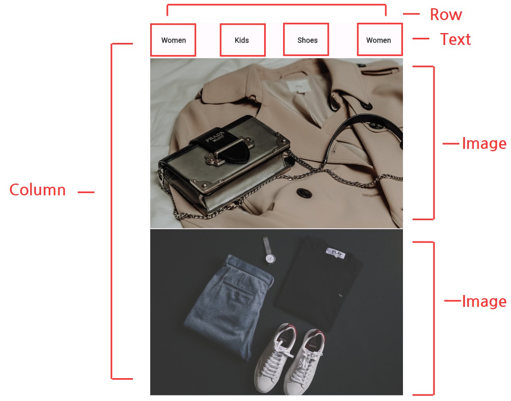
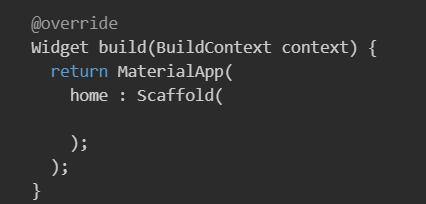
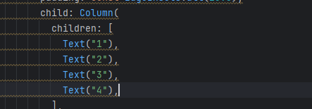
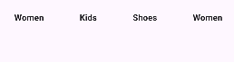
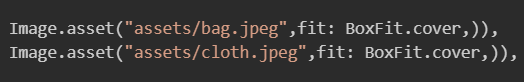
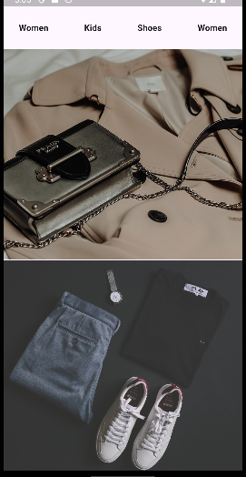

Chapter 04 스토어 앱 만들기
완성 화면

주요 위젯 구성

1. MaterialApp vs CupertinoApp

안드로이드 앱을 만들기 위해 MaterialApp 을 사용한다.
2. Scaffold
- 앱 바(AppBar): 상단에 앱 바를 추가하여 앱의 제목이나 액션 버튼을 표시할 수 있다.
- 바디(Body): 앱의 주요 콘텐츠를 표시하는 영역. 다양한 위젯을 바디에 배치하여 앱의 주요 기능을 구현할 수 있다.
- 플로팅 액션 버튼(FloatingActionButton): 화면에 고정된 액션 버튼을 추가하여 사용자가 중요한 작업을 쉽게 수행할 수 있도록 도와준다.

MaterialApp 내부에 Scaffold 위젯을 구현해 기본 뼈대를 만든다.
Scaffold 로 감싸는 순간 휴대폰 화면에 구조가 만들어지고 쉽게 앱을 만들 수 있다.
3. Column , Row
3.1 Column 위젯

3.2 Row 위젯
4. Text 위젯
5. Spacer 위젯


6. Image 위젯

7. Expanded 위젯

8. SizedBox 위젯


이미지 사이의 간격을 줄 수 있다.
9. Padding 위젯